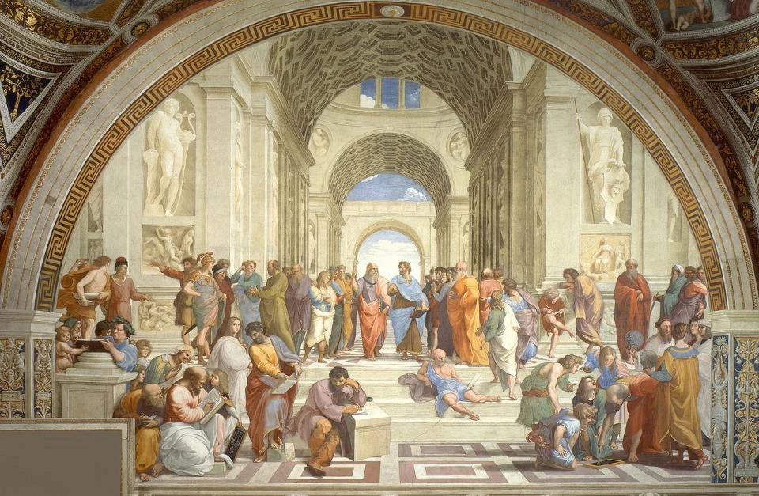

PHILOSOPHY IN MODERN TIMES
In an era dominated by social media and rapid information, preserving philosophy is essential to avoid societal collapse. Thoughtful reflection and critical thinking guide us in understanding our world and ourselves.

Our Philosophical Vision
Philosophy is the bridge between action and understanding. In times of distraction, it reminds us to pause, reflect, and question the assumptions that govern our lives.
Quotes from Philosophers
“The unexamined life is not worth living.”
— Socrates
“He who has a why to live can bear almost any how.”
— Friedrich Nietzsche
“Happiness is not an ideal of reason but of imagination.”
— Immanuel Kant
“I think, therefore I am.”
— René Descartes
“Socrates”
Socrates
The father of Western philosophy. Encouraged self-reflection and dialogue to uncover truth and wisdom.
Friedrich Nietzsche
German philosopher known for his critique of morality and culture, exploring the depths of human existence.
Immanuel Kant
Pioneered modern philosophy, exploring reason, morality, and the conditions of human understanding.